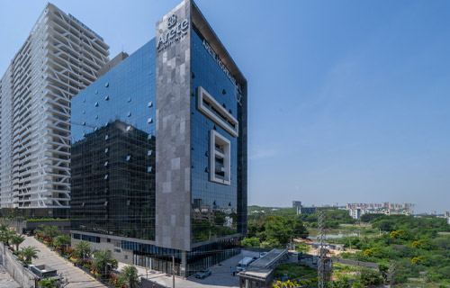

Clinical rounds & case discussion
Outpatient clinic, imaging review and pre-operative planning with Dr. Sura and the spine team. You present cases, argue indications and learn why a patient is or is not an endoscopic candidate.
Spend six weeks learning the clinical decision-making behind full endoscopic spine surgery alongside Dr. Sukumar Sura and the team at Asian Spine Hospital, Hyderabad.
From patient selection and approach planning to operative observation, scrubbed assisting, simulation and postoperative care.
A 1 to 3-day workshop is a valuable introduction: you handle the instruments and practise on a model. What it cannot give you is the daily rhythm of a dedicated endoscopic spine centre — the patient who is not a candidate, the approach that changes after the MRI review, the postoperative call on day three. This fellowship is built around that rhythm.
Patient-selection judgement. Imaging-based decision making. Approach planning. Intraoperative problem-solving. Complication avoidance. Postoperative management. Followed from the outpatient clinic through theatre to discharge, on real cases, with the same team every day.
Orthopaedic surgeons, neurosurgeons and spine surgeons who have completed their postgraduate training and want to introduce or deepen full endoscopic spine surgery in their own practice. Four fellows per batch, selected by interview.
The fellowship is a clinical learning programme, not an operating licence. Here is exactly what each learning format involves, so you can judge whether it suits where you are today.
Outpatient clinic, imaging review and pre-operative planning with Dr. Sura and the spine team. You present cases, argue indications and learn why a patient is or is not an endoscopic candidate.
Daily presence in the full endoscopic theatre, following the live endoscopic view, approach set-up, instrument sequence and intraoperative decisions across the theatre list.
Fellows scrub in and assist under the direct supervision of the operating surgeon. The extent of assisting is decided case by case by Dr. Sura, based on the procedure, your demonstrated competence and the conditions below.
Hands-on practice on RealSpine simulation systems for lumbar, thoracic and cervical full endoscopic techniques — where you build instrument handling and the endoscopic orientation yourself.
Theatre and department orientation. Endoscopic anatomy and the transforaminal and interlaminar corridors. Reading MRI and CT for endoscopic candidacy. First days in theatre as observer.
Approach planning on imaging, needle trajectory, foraminoplasty for lateral recess stenosis, and the trans-iliac route to L5–S1. Theatre observation moves to scrubbed assisting as cases and competence allow.
Interlaminar window technique, nerve-root handling, and lamino-foraminoplasty with 360° decompression for canal stenosis. Complication-avoidance review on live cases.
Indications, positioning and approach differences for thoracic and cervical discectomy. Simulation on the cervical and thoracic RealSpine modules; theatre exposure as the list allows.
EndoFusion workflow, revision and recurrent cases, managing the difficult disc and dural tears. Postoperative management protocols from day 0 to follow-up.
Case-planning exercises on your own typical patients, set-up and instrument requirements for your centre, and a closing review with Dr. Sura. Fellowship certificate issued on completion.
Indicative curriculum. The sequence follows the hospital's live theatre list and patient mix, so week-to-week emphasis may shift; the content covered across the six weeks does not.
Senior Neurosurgeon and Director, Centre for Full Endoscopic Spine Surgery, Asian Spine Hospital. Over 4,000 brain and spine surgeries, including more than 2,500 full endoscopic spine procedures and 200+ full endoscopic fusions, with eight years focused on lumbar, thoracic and cervical endoscopic techniques.

Techniques you will see in practice: full endoscopic transforaminal lumbar, thoracic and cervical discectomy · transforaminal foraminoplasty for lateral recess stenosis · trans-iliac transforaminal L5–S1 · interlaminar discectomy and decompression · lamino-foraminoplasty with 360° decompression for canal stenosis · full endoscopic-assisted spine fusion.
MS · DNB · MRCS (Edinburgh) · M.Ch Neurosurgery (PGIMER, Chandigarh) · FRCS Neurosurgery (Edinburgh) · IFAANS (USA)



The fellowship is delivered at Asian Spine Hospital, a 25-bed super-speciality spine centre built around full endoscopic surgery — not a general hospital with an endoscopy list.
Fellows train alongside the clinical team and on RealSpine (Realists Training Technologies, Germany) simulation systems for lumbar, thoracic and cervical full endoscopic techniques.
The centre's team has performed over 2,500 full endoscopic spine procedures and more than 5,000 pain procedures, and hosted the 1st World Congress of Spine Endoscopy in Hyderabad in 2019.
No surprises after the form. The fee, what it covers, who is eligible and how intakes work — all here, before you start.
Payable only after you are selected and your dates are confirmed — never at application. The fee covers the full six-week clinical programme, simulation access, faculty-led case discussions, learning materials and the fellowship certificate.
Travel, accommodation, visa and personal expenses are not included. We can suggest nearby accommodation options on request.
Complete the application once. The fellowship team reviews every submission and invites suitable applicants to interview.
Complete the application below with your credentials, endoscopic experience, objectives and preferred dates, then email three documents.
Acknowledged within 2 working daysThe fellowship team reviews your qualifications and endoscopic exposure, then invites shortlisted applicants to a video interview to discuss objectives and agree dates.
Video interview · 20–30 minutesSelected fellows receive confirmed dates, the fee invoice and joining instructions. Fee is payable only at this stage. Please book travel only after this confirmation.
Fee due on confirmationAbout 10–12 minutes · 7 sections · 3 documents emailed afterwards · Nothing payable now
About 10–12 minutes. Your qualifications, current practice, endoscopic experience, learning objectives and preferred dates. Three documents are emailed afterwards — you will not upload anything here.
Both, in defined ways. You observe daily in theatre, you scrub in and assist under direct supervision as Dr. Sura judges appropriate for each case, and you get genuine hands-on practice on RealSpine simulators. You do not operate independently on patients during the fellowship.
The centre's team has performed more than 2,500 full endoscopic procedures, and theatre runs most working days. Case numbers vary with the hospital's list and patient mix, so we do not promise a figure. The batch is capped at four fellows so that theatre access stays meaningful for each person.
Six weeks builds the clinical reasoning, approach planning and supervised operative experience to start endoscopic spine surgery at your centre with a clear plan. Independent practice depends on your prior spine experience, your institution's credentialing and continued case volume. We do not claim that any course makes a surgeon independent on its own.
Yes. International fellows take part fully in clinical rounds, case discussion, theatre observation and simulation. Scrubbed assisting on patients depends on your medical registration status and the hospital's institutional permissions, which we confirm at interview, before any fee is paid.
Batches run through the year with four fellows each. You indicate a preferred and an alternative period in your application. We acknowledge every application within 2 working days, invite shortlisted applicants to a video interview, and confirm dates with the selection decision.
₹75,000 + GST for surgeons from India, US$ 2,000 + GST for international surgeons. It covers the six-week programme, simulation access, case discussions, materials and the certificate. It is invoiced only after selection and date confirmation. Travel, accommodation, visa and personal costs are separate.
Tell the fellowship coordinator as early as possible. A confirmed place can usually be moved to a later batch once; refund terms for a paid fee are set out in your confirmation letter. Please do not book travel until your dates are confirmed in writing.
Yes. A fellowship completion certificate from the Centre for Full Endoscopic Spine Surgery, Asian Spine Hospital, is issued on completion of the six weeks.
For eligibility, participation or intake-date questions, write to the fellowship coordination team.
Contact Fellowship Coordinator